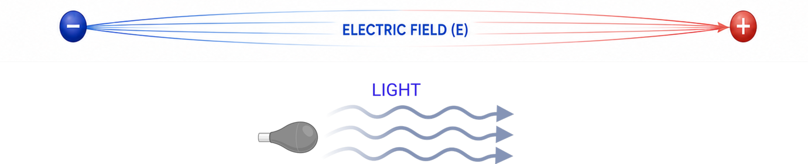
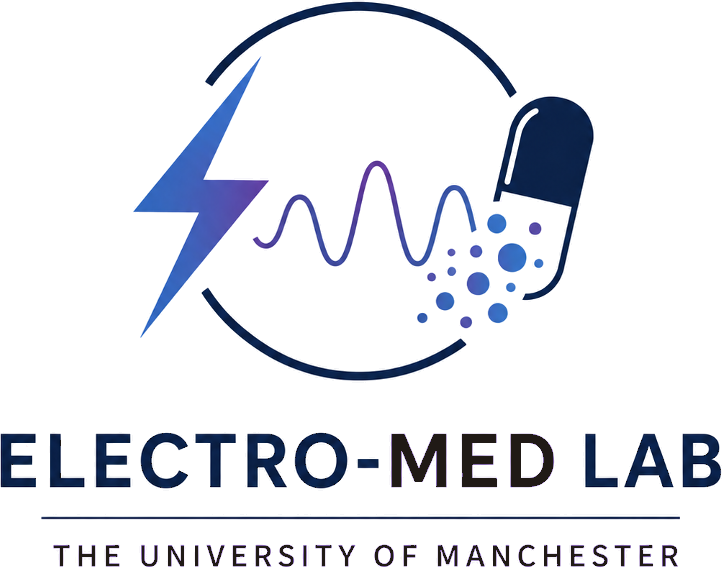

We are an interdisciplinary research group at the interface of bioelectronics, materials chemistry, nanobiotechnology and drug delivery. A growing, collaborative team bringing together diverse expertise, perspectives and ideas.
We create innovative nanomaterials and bioelectronic platforms to sense, understand and manipulate biological systems through electrical signals, ultimately advancing next-generation diagnostics and therapeutics for cancer and other diseases.
By connecting fundamental science, engineering and biomedicine, we create transformative technologies for “electro-medicine”, spanning diagnostics, disease monitoring, targeted drug delivery and novel therapeutic approaches.
Four research directions towards electro-medicine
Each strand uses electric fields or light responsive materials to sense, understand or manipulate biological systems for diagnosis and therapy.

News from the lab
Dr Akhil Jain is invited to deliver a Plenary Lecture at the World Congress on Nanomedicine 2026.
Dr Jain was awarded an EPSRC Open Fellowship to establish the Electro-Med group, funding the lab for five years, from 2026 to 2031.
A new Zeiss Axiovert 7 fluorescence microscope is now running within the lab, funded through a successful divisional bid.
We are building the lab, and we would like you to help us build it
We welcome enquiries from undergraduate, masters, PhD and postdoctoral researchers interested in bioelectronics, nanomaterials and drug delivery.
